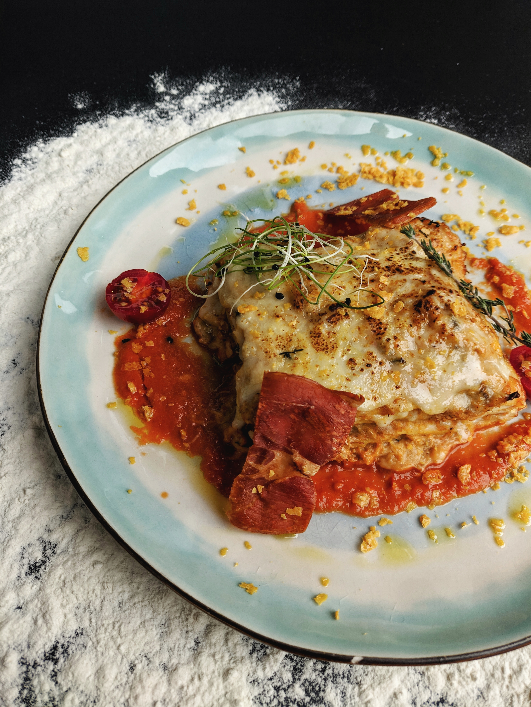

Lasagna

Description
This lasagna recipe is full of vibrant, meaty, and cheesy flavor that will leave your mouth watering for more.
It is the perfect meal to serve at dinner for a loved one or for your family, and people will be begging for your recipe!
Ingredients
- Half a pound of ground pork
- Half a pound of lean ground beef
- Onions
- Canned tomatoes
- Two tablespoons of parsley
- One clove of garlic
- Sugar
- Dried basil
- Dried oregano
- Salt
- Black Pepper
- Uncooked noodles
- Parmesan cheese
- Shredded mozzarella
- Eggs
Recipe
- Combine your grounded meats
- Cook the meat until it is browned and crumbly
- Add the onion and cook until the onion is translucent
- Stir in the canned tomato, half of the parsley, basil, 1.5 teaspoons of salt, oregano, and sugar
- Boil the noodles in slightly salted water until they are al dente
- Mix the parmesan cheese, eggs, remaining parsley, remaining salt, and pepper in a bowl
- Layer the sauce, noodles, and cheese in order until the lasagna is to your liking
- Cover the lasagna with foil
- Preheat oven to 375F and bake the lasagna for 35 minutes
- Uncover the lasagna and bake for 10 minutes or until the top is golden brown.
- Serve with a dash of basil, and enjoy!
Home